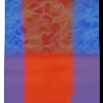

The bottom of the pots show us clearly that this spherical mapping(left) is wrapping the texture twice, and shrinkwrap mapping(center) only once. The shrinkwrap mapping causes some unwanted discontinuity underneath the lip of the pot however, where we see a the blue and red reversed. This is because of the 'my normal faces towards the other side so I'll use that color instead' feature of shrinkwrapping. In this case, it is undesirable.
It is easy to see the leaves in the shrinkwrapped object are affected by their normals. (In this case they are affected in the opposite way as would be desired because we are looking at the petals as backfaces. The blue ones on the left would be red if we were not using the reverse normals of the side we are viewing.) Once again shrinkwrap fails us, but it worked nicely when viewing from the top.
The triangle face mapping is seen to be 'almost' working on the bottom of the right pot. (The bottom is made of entirely of three sided polygons, most of which are texturemapped properly, but cyan shows 'holes' in my algorithm.)
